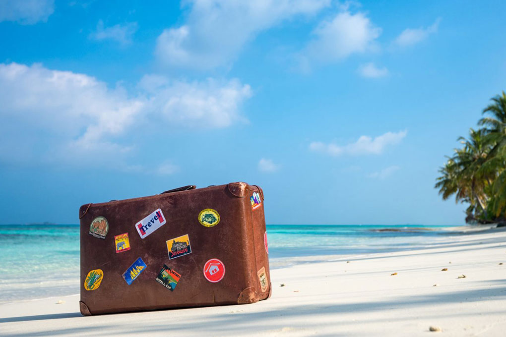
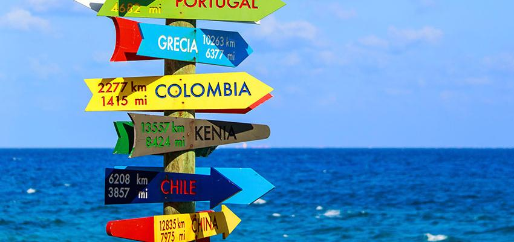

Ce site à été créer afin de vous donner envie de voyager. Si l'envie est déjà là, mais que votre valise n'est toujours pas fait il vous donnera les raisons nécessaires pour sauter le pas. Que vous soyez à la recherche d'un itinéraire de randonnée (avec votre pitou )d'un voyage tout inclus, d'un circuit de groupe ou d'un dépaysagement total, nous saurons vous conseiller.
 Si vous avez besoin de conseils ou plus d'informations pour organiser votre
prochain départ,n'hésitez pas à nous contacter appelez-nous!